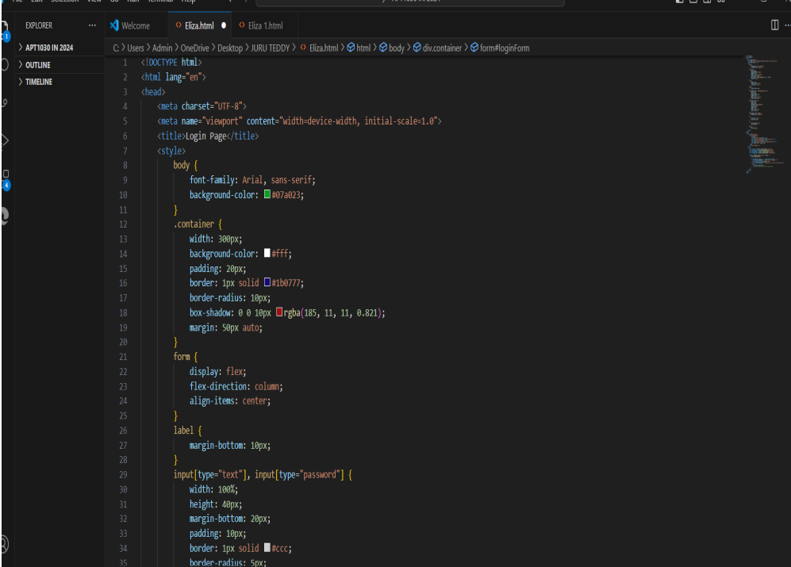

Project Title
X
Project Description

As a passionate software engineering student at USIU, I am dedicated to mastering software development principles and practices. With hands-on experience in coding, algorithm design, and system architecture, I have a strong foundation in HTML and Python. My keen interest in cybersecurity drives me to explore innovative solutions to protect digital landscapes. I excel in problem-solving and thrive in diverse teams, leveraging my ability to understand and manage emotions to foster collaboration and resolve conflicts. My journey is not just about acquiring technical skills but also about making a real-world impact by creating secure and efficient software solutions. I am eager to contribute my expertise and enthusiasm to projects that push the boundaries of technology, confident that my unique blend of technical acumen and emotional intelligence will make a meaningful difference.
My programming journey has been comprehensive and multifaceted, encompassing a diverse array of languages including Python, HTML, C++, and CSS. Python, with its simplicity and versatility, has become my preferred language for a variety of projects, ranging from web development to data analysis. HTML provided the essential foundation for web development, enabling me to structure content effectively and create visually appealing web pages. My exploration of C++ delved into the realm of systems programming, significantly enhancing my problem-solving abilities and deepening my understanding of core software development principles. Additionally, CSS has added a layer of creativity and aesthetics to my skill set, allowing me to style and beautify web pages with precision. Each of these languages has contributed uniquely to my development as a programmer, shaping me into a versatile and adaptable professional capable of tackling a wide range of technical challenges.
I embarked on my educational journey in 2009 at Leer Nursery and Primary School in South Sudan, where I laid a strong foundation for my academic pursuits. Building upon this early education, I continued my secondary studies at Alliance High Secondary School in Uganda, where I further honed my skills and broadened my knowledge. Subsequently, I advanced my education at Mat Secondary School in South Sudan, where I deepened my understanding of various subjects and prepared myself for future academic and professional endeavors. This diverse educational background has equipped me with a robust and well-rounded foundation, enabling me to approach challenges with a comprehensive and informed perspective. I am currently engaged in an academic program in Information Systems and Technology at United States International University-Africa. This rigorous curriculum is designed to equip me with a comprehensive understanding of both theoretical and practical aspects of the field. Through my studies, I am gaining proficiency in various technologies and methodologies, which are essential for addressing complex challenges in today's digital landscape. My education at this esteemed institution is providing me with the skills and knowledge necessary to excel in the dynamic and ever-evolving world of information technology.
Login page that can validate input fields.
Knowledge base that includes facts and relationships about your family, extending to a minimum of four generations.
A program to calculate and display the area of a shape that the user defines via the keyboard.
A Program that takes Marks As Input And Awards The Appropriate Grade Based On Usiu's Grading System.
X
Project Description